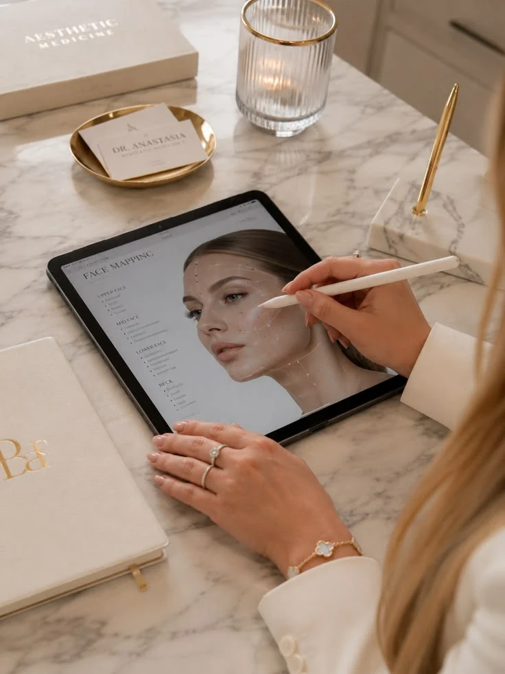

Minőség
Gondosan választom ki a kezelésekhez használt hatóanyagokat és eljárásokat. A bőröd igényei adják a kiindulópontot.

Szakértelem, törődés és énidő
Szia, Eliza vagyok. Hiszek a gondoskodás erejében és abban, hogy minden bőr megérdemli a személyes figyelmet. Nálam a kezelés egy beszélgetéssel kezdődik.
Ismerd meg a szakértődet
A szépség mindig is az életem része volt. Saját szalonomban azon dolgozom, hogy a vendégeim bőre megkapja a neki megfelelő törődést.
Fontos számomra a folyamatos tanulás és a tudás átadása. A kezeléseimben a szakmai felkészültség és a személyes odafigyelés találkozik.
A kozmetika számomra önbizalomról, jó közérzetről és énidőről is szól. Azt szeretném, hogy feltöltődve távozz.
Gondosan választom ki a kezelésekhez használt hatóanyagokat és eljárásokat. A bőröd igényei adják a kiindulópontot.
Felesleges ígéretek helyett átbeszéljük a lehetőségeket, és közösen alakítjuk ki a kezelési tervedet.
A természetes szépséged kiemelése és a bőröd hosszú távú ápolása a célom.
A folyamatos tanulás a munkám része: szeretném naprakész tudással segíteni a vendégeimet.
Egy jó kezelés alkalom arra is, hogy kiszakadj a hétköznapokból, megpihenj és feltöltődj.

Profizmus és harmónia
Privát, nyugodt környezetben fogadlak. Van idő megismerni a bőrödet, az arcápolási szokásaidat és azt, amire igazán vágysz.
A kezelés után otthoni tanácsokkal is segítek, hogy a gondoskodás a szalonon túl is folytatódjon.
Kezdjük egy beszélgetéssel. Megismerem a bőröd igényeit, és együtt találjuk meg a következő lépést.
Időpontot kérekSzeretettel várlak
Kérdésed van a kezelésekről, vagy időpontot szeretnél egyeztetni? Keress bizalommal, és segítek megtalálni a számodra legjobb megoldást!
Prototípus: a telefon és az e-mail oktatási mintaadat. Éles használat előtt cserélendő.